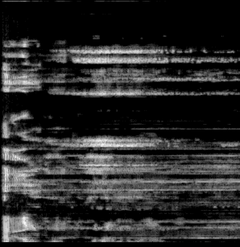
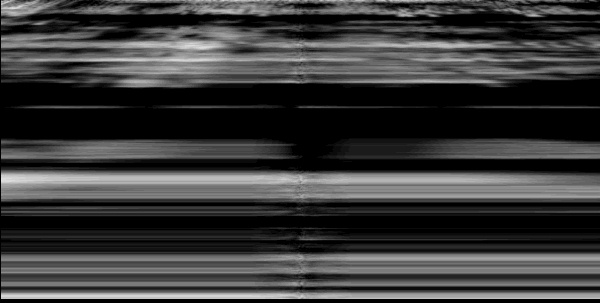
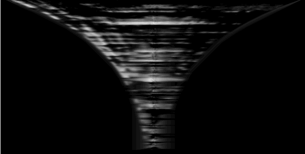

Scratch Space
Inspired by Aphex Twin's Windowlicker I got the idea to make an augmented reality app that would be able to generate sounds whose spectrograms would display images taken by the user. After generating the sounds it would create the corresponding spectrogram images and then render them in augmented reality on discs like records that the user could rotate to scratch/scrub to create music.
I started building a prototype and got as far as rendering spectrograms on textures and creating sounds from arbitrary images. It used Three.js for the 3D graphics and the Web Audio API to create and analyze sounds.

Once I was able to make spectrograms and make sounds with images hidden in their spectrograms I started writing shaders with feedback to visualize the time aspect of the audio playback.

I wanted to have the visuals fade out over time so I started playing with scaling effects.


To get the disc effect I wrapped the visuals in a circle and added a diffusion effect as a shader with feedback.
2017